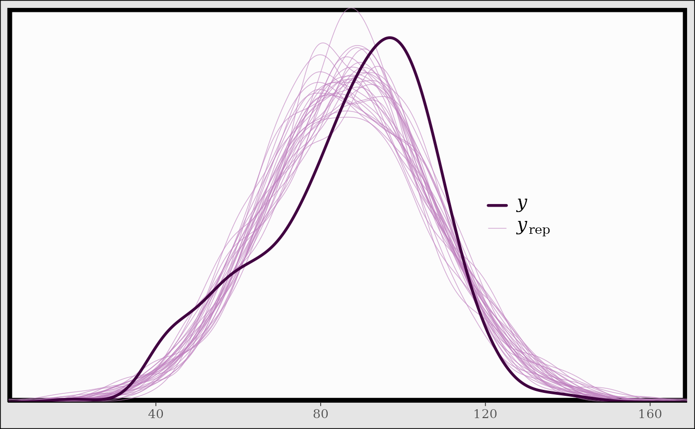
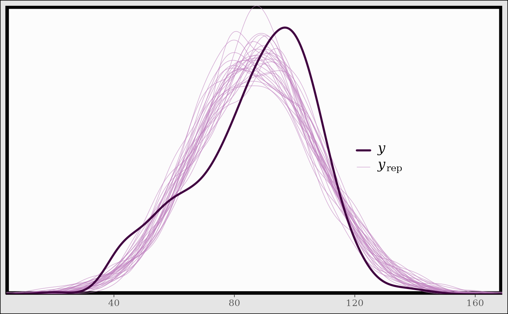

Convenience functions for adding or changing plot details
Source:R/bayesplot-helpers.R
bayesplot-helpers.RdConvenience functions for adding to (and changing details of) ggplot objects (many of the objects returned by bayesplot functions). See the Examples section, below.
Usage
vline_at(v, fun, ..., na.rm = TRUE)
hline_at(v, fun, ..., na.rm = TRUE)
vline_0(..., na.rm = TRUE)
hline_0(..., na.rm = TRUE)
abline_01(..., na.rm = TRUE)
lbub(p, med = TRUE)
legend_move(position = "right")
legend_none()
legend_text(...)
xaxis_title(on = TRUE, ...)
xaxis_text(on = TRUE, ...)
xaxis_ticks(on = TRUE, ...)
yaxis_title(on = TRUE, ...)
yaxis_text(on = TRUE, ...)
yaxis_ticks(on = TRUE, ...)
facet_text(on = TRUE, ...)
facet_bg(on = TRUE, ...)
panel_bg(on = TRUE, ...)
plot_bg(on = TRUE, ...)
grid_lines(color = "gray50", size = 0.2)
overlay_function(...)Arguments
- v
Either a numeric vector specifying the value(s) at which to draw the vertical or horizontal line(s), or an object of any type to use as the first argument to
fun.- fun
A function, or the name of a function, that returns a numeric vector.
- ...
For the various
vline_,hline_, andabline_functions,...is passed toggplot2::geom_vline(),ggplot2::geom_hline(), andggplot2::geom_abline(), respectively, to control the appearance of the line(s).For functions ending in
_bg,...is passed toggplot2::element_rect().For functions ending in
_textor_title,...is passed toggplot2::element_text().For
xaxis_ticksandyaxis_ticks,...is passed toggplot2::element_line().For
overlay_function,...is passed toggplot2::stat_function().- na.rm
A logical scalar passed to the appropriate geom (e.g.
ggplot2::geom_vline()). The default isTRUE.- p
The probability mass (in
[0,1]) to include in the interval.- med
Should the median also be included in addition to the lower and upper bounds of the interval?
- position
The position of the legend. Either a numeric vector (of length 2) giving the relative coordinates (between 0 and 1) for the legend, or a string among
"right","left","top","bottom". Usingposition = "none"is also allowed and is equivalent to usinglegend_none().- on
For functions modifying ggplot theme elements, set
on=FALSEto set the element toggplot2::element_blank(). For example, facet text can be removed by addingfacet_text(on=FALSE), or simplyfacet_text(FALSE)to a ggplot object. Ifon=TRUE(the default), then...can be used to customize the appearance of the theme element.- color, size
Passed to
ggplot2::element_line().
Value
A ggplot2 layer or ggplot2::theme() object that can be
added to existing ggplot objects, like those created by many of the
bayesplot plotting functions. See the Details section.
Details
Add vertical, horizontal, and diagonal lines to plots
vline_at()andhline_at()return an object created by eitherggplot2::geom_vline()orggplot2::geom_hline()that can be added to a ggplot object to draw a vertical or horizontal line (at one or several values). Iffunis missing then the lines are drawn at the values inv. Iffunis specified then the lines are drawn at the values returned byfun(v).vline_0()andhline_0()are wrappers forvline_at()andhline_at()withv = 0andfunmissing.abline_01()is a wrapper forggplot2::geom_abline()with the intercept set to0and the slope set to1.lbub()returns a function that takes a single argumentxand returns the lower and upper bounds (lb,ub) of the100*p\ ofx, as well as the median (ifmed=TRUE).
Control appearance of facet strips
facet_text()returns ggplot2 theme objects that can be added to an existing plot (ggplot object) to format the text in facet strips.facet_bg()can be added to a plot to change the background of the facet strips.
Move legend, remove legend, or style the legend text
legend_move()andlegend_none()return a ggplot2 theme object that can be added to an existing plot (ggplot object) in order to change the position of the legend or remove it.legend_text()works much likefacet_text()but for the legend.
Control appearance of \(x\)-axis and \(y\)-axis features
xaxis_title()andyaxis_title()return a ggplot2 theme object that can be added to an existing plot (ggplot object) in order to toggle or format the titles displayed on thexoryaxis. (To change the titles themselves useggplot2::labs().)xaxis_text()andyaxis_text()return a ggplot2 theme object that can be added to an existing plot (ggplot object) in order to toggle or format the text displayed on thexoryaxis (e.g. tick labels).xaxis_ticks()andyaxis_ticks()return a ggplot2 theme object that can be added to an existing plot (ggplot object) to change the appearance of the axis tick marks.
Customize plot background
plot_bg()returns a ggplot2 theme object that can be added to an existing plot (ggplot object) to format the background of the entire plot.panel_bg()returns a ggplot2 theme object that can be added to an existing plot (ggplot object) to format the background of the just the plotting area.grid_lines()returns a ggplot2 theme object that can be added to an existing plot (ggplot object) to add grid lines to the plot background.
Superimpose a function on an existing plot
overlay_function()is a simple wrapper forggplot2::stat_function()but with theinherit.aesargument fixed toFALSE. Fixinginherit.aes=FALSEwill avoid potential errors due to theggplot2::aes()thetic mapping used by certain bayesplot plotting functions.
See also
theme_default() for the default ggplot theme used by
bayesplot.
Examples
color_scheme_set("gray")
x <- example_mcmc_draws(chains = 1)
dim(x)
#> [1] 250 4
colnames(x)
#> [1] "alpha" "sigma" "beta[1]" "beta[2]"
###################################
### vertical & horizontal lines ###
###################################
(p <- mcmc_intervals(x, regex_pars = "beta"))
# vertical line at zero (with some optional styling)
p + vline_0()
p + vline_0(linewidth = 0.25, color = "darkgray", linetype = 2)
# vertical line(s) at specified values
v <- c(-0.5, 0, 0.5)
p + vline_at(v, linetype = 3, linewidth = 0.25)
my_lines <- vline_at(v, alpha = 0.25, linewidth = 0.75 * c(1, 2, 1),
color = c("maroon", "skyblue", "violet"))
p + my_lines
# \donttest{
# add vertical line(s) at computed values
# (three ways of getting lines at column means)
color_scheme_set("brightblue")
p <- mcmc_intervals(x, regex_pars = "beta")
p + vline_at(x[, 3:4], colMeans)
p + vline_at(x[, 3:4], "colMeans", color = "darkgray",
lty = 2, linewidth = 0.25)
p + vline_at(x[, 3:4], function(a) apply(a, 2, mean),
color = "orange",
linewidth = 2, alpha = 0.1)
# }
# using the lbub function to get interval lower and upper bounds (lb, ub)
color_scheme_set("pink")
parsed <- ggplot2::label_parsed
p2 <- mcmc_hist(x, pars = "beta[1]", binwidth = 1/20,
facet_args = list(labeller = parsed))
(p2 <- p2 + facet_text(size = 16))
b1 <- x[, "beta[1]"]
p2 + vline_at(b1, fun = lbub(0.8), color = "gray20",
linewidth = 2 * c(1,.5,1), alpha = 0.75)
p2 + vline_at(b1, lbub(0.8, med = FALSE), color = "gray20",
linewidth = 2, alpha = 0.75)
 ##########################
### format axis titles ###
##########################
color_scheme_set("green")
y <- example_y_data()
yrep <- example_yrep_draws()
(p3 <- ppc_stat(y, yrep, stat = "median", binwidth = 1/4))
# turn off the legend, turn on x-axis title
p3 +
legend_none() +
xaxis_title(size = 13, family = "sans") +
ggplot2::xlab(expression(italic(T(y)) == median(italic(y))))
##########################
### format axis titles ###
##########################
color_scheme_set("green")
y <- example_y_data()
yrep <- example_yrep_draws()
(p3 <- ppc_stat(y, yrep, stat = "median", binwidth = 1/4))
# turn off the legend, turn on x-axis title
p3 +
legend_none() +
xaxis_title(size = 13, family = "sans") +
ggplot2::xlab(expression(italic(T(y)) == median(italic(y))))
 ################################
### format axis & facet text ###
################################
color_scheme_set("gray")
p4 <- mcmc_trace(example_mcmc_draws(), pars = c("alpha", "sigma"))
myfacets <-
facet_bg(fill = "gray30", color = NA) +
facet_text(face = "bold", color = "skyblue", size = 14)
p4 + myfacets
# \donttest{
##########################
### control tick marks ###
##########################
p4 +
myfacets +
yaxis_text(FALSE) +
yaxis_ticks(FALSE) +
xaxis_ticks(linewidth = 1, color = "skyblue")
# }
##############################
### change plot background ###
##############################
color_scheme_set("blue")
# add grid lines
ppc_stat(y, yrep) + grid_lines()
#> Note: in most cases the default test statistic 'mean' is too weak to detect anything of interest.
#> `stat_bin()` using `bins = 30`. Pick better value `binwidth`.
################################
### format axis & facet text ###
################################
color_scheme_set("gray")
p4 <- mcmc_trace(example_mcmc_draws(), pars = c("alpha", "sigma"))
myfacets <-
facet_bg(fill = "gray30", color = NA) +
facet_text(face = "bold", color = "skyblue", size = 14)
p4 + myfacets
# \donttest{
##########################
### control tick marks ###
##########################
p4 +
myfacets +
yaxis_text(FALSE) +
yaxis_ticks(FALSE) +
xaxis_ticks(linewidth = 1, color = "skyblue")
# }
##############################
### change plot background ###
##############################
color_scheme_set("blue")
# add grid lines
ppc_stat(y, yrep) + grid_lines()
#> Note: in most cases the default test statistic 'mean' is too weak to detect anything of interest.
#> `stat_bin()` using `bins = 30`. Pick better value `binwidth`.
 # panel_bg vs plot_bg
ppc_scatter_avg(y, yrep) + panel_bg(fill = "gray90")
ppc_scatter_avg(y, yrep) + plot_bg(fill = "gray90")
color_scheme_set("yellow")
p5 <- ppc_scatter_avg(y, yrep, alpha = 1)
p5 + panel_bg(fill = "gray20") + grid_lines(color = "white")
# \donttest{
color_scheme_set("purple")
ppc_dens_overlay(y, yrep[1:30, ]) +
legend_text(size = 14) +
legend_move(c(0.75, 0.5)) +
plot_bg(fill = "gray90") +
panel_bg(color = "black", fill = "gray99", linewidth = 3)

# }
###############################################
### superimpose a function on existing plot ###
###############################################
# compare posterior of beta[1] to Gaussian with same posterior mean
# and sd as beta[1]
x <- example_mcmc_draws(chains = 4)
dim(x)
#> [1] 250 4 4
purple_gaussian <-
overlay_function(
fun = dnorm,
args = list(mean(x[,, "beta[1]"]), sd(x[,, "beta[1]"])),
color = "purple",
linewidth = 2
)
color_scheme_set("gray")
mcmc_hist(x, pars = "beta[1]", freq = FALSE) + purple_gaussian
#> `stat_bin()` using `bins = 30`. Pick better value `binwidth`.
# \donttest{
mcmc_dens(x, pars = "beta[1]") + purple_gaussian
# }
# panel_bg vs plot_bg
ppc_scatter_avg(y, yrep) + panel_bg(fill = "gray90")
ppc_scatter_avg(y, yrep) + plot_bg(fill = "gray90")
color_scheme_set("yellow")
p5 <- ppc_scatter_avg(y, yrep, alpha = 1)
p5 + panel_bg(fill = "gray20") + grid_lines(color = "white")
# \donttest{
color_scheme_set("purple")
ppc_dens_overlay(y, yrep[1:30, ]) +
legend_text(size = 14) +
legend_move(c(0.75, 0.5)) +
plot_bg(fill = "gray90") +
panel_bg(color = "black", fill = "gray99", linewidth = 3)

# }
###############################################
### superimpose a function on existing plot ###
###############################################
# compare posterior of beta[1] to Gaussian with same posterior mean
# and sd as beta[1]
x <- example_mcmc_draws(chains = 4)
dim(x)
#> [1] 250 4 4
purple_gaussian <-
overlay_function(
fun = dnorm,
args = list(mean(x[,, "beta[1]"]), sd(x[,, "beta[1]"])),
color = "purple",
linewidth = 2
)
color_scheme_set("gray")
mcmc_hist(x, pars = "beta[1]", freq = FALSE) + purple_gaussian
#> `stat_bin()` using `bins = 30`. Pick better value `binwidth`.
# \donttest{
mcmc_dens(x, pars = "beta[1]") + purple_gaussian
# }